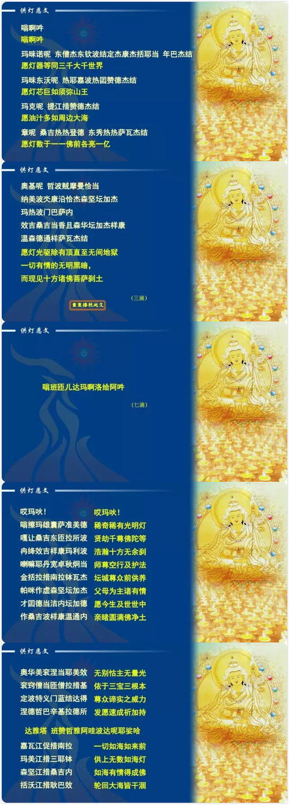

（供灯的功德）
（供灯教学）

（供灯仪轨）
在《大藏经》中，对供灯的功德介绍得很详细，有部经叫《佛为首迦长者说业报差别经》，里面宣讲了供灯的十种功德：
一、照世如灯。供灯者生生世世如同世间的明灯，转生为人也是人中之王，就像上师如意宝一样，慧灯照亮整个世界。
二、肉眼不坏。供灯者肉眼非常明亮，不会变成盲人，也不会成近视眼。有些人眼睛看不清楚，需要戴度数很高的眼镜，一层一层的，这说明以前没有供过灯，这辈子应该好好供。开玩笑！但确实有这个功德。
三、得于天眼。供灯者将来会获得五眼中的天眼。
四、善恶智能。能辨别善法和恶法，懂得一切因果取舍。现在世间上许多人极为盲目，不知善恶取舍，而供灯者的智慧超越其他人。
五、灭除大暗。具有超胜的智慧，能灭除自他相续中的一切愚痴黑暗。
六、得智能明。自己的智慧超群众人，不受外界的各种诱惑，有辨别取舍的能力。
七、不在暗处。生生世世不会转生在邪见或者黑暗的地方，住于光明的殊胜之地。
八、具大福报。转生为具有大福报的众生。世间人认为大福报就是有钱、有地位、有轿车、有房屋、有人民币或者有美金。其实我认为真正有福报的人，终生不会造罪业，具有修持善法的机会。没钱不一定是福报浅薄，一个人即生中遇到佛法，行持佛法的机会圆满，就是有大福德的人。
九、命终生天。命终后不会堕入恶趣，而会转生天界。其他经典中也说，长期供灯的人不会生于恶趣，而是上生天趣，即使投生人间，也生于高贵种族的家庭中，不会生在具邪见者的家里。我们极个别道友生长在具有邪见的家庭中，父亲的邪见如山王，母亲的邪见也极其严重，孩子以微薄的力量很难转变他们。而供灯的话，生生世世不会转生到这种家庭中。
十、速证涅槃。很快的时间中能证得圣者的果位。
此经所介绍的十种功德，大家应该要记住，如果以信心来供灯，功德决定会得到的。上师如意宝在世时，对供灯也极为重视，别人供养他老人家的财产，全部作为普贤云供的基金，请僧众们每天供3000盏灯，多年来一直如此，至今法王圆寂接近四年了，从来也没有间断过。法王在讲《贤愚经》时说，他的根本上师托嘎如意宝，一辈子对两种善根最重视，一是印观音经旗，二是供灯。托嘎如意宝每天要供500盏灯，别人对他的供养，基本上不作其他功德，都是用来供灯。同样，法王老人家一生中除了放生以外，对修寺院、建学校等其他功德也不太重视，最重视的就是供灯。噶当派的三同门也很重视供灯，他们在佛堂上供奉着释迦牟尼像、经书和佛塔，不间断地供水、供灯。所以，大家有能力的话，应该尽量供灯。
——节选自索达吉堪布《供灯之功德》
（供水教学）

（供水仪轨）
慈诚罗珠堪布在《慧灯之光》中说：“供水却要供七杯。每个杯子中间的间隙既不能太宽，也不能太密，一般大小的供杯（直径10厘米左右）之间的间隙，为一粒米的宽度；如果是大供杯（直径20厘米左右），其间隙就是一根手指的宽度，供杯应在一条线上整整齐齐地摆放，倒水的时候既不能因太满而溢出，也不能太少。七杯水每天下午都要收回倒掉，第二天再换上新的凉水。”
施水时可念“嗡啊吽”，观想其以少变多，遍布虚空，令无量鬼道众生均获得受用和满足，亦可念观音心咒“嗡嘛呢呗咩吽”加持，还可念一偈：“此施诸善根，愿彼利饿鬼，离饿鬼劣身，获善趣安乐。”
《藏巴拉功德经》云：
一、水供一次相当于念诵阿弥陀佛心咒100万遍，黄财神心咒100万遍功德。
二、水供一次所有饿鬼道众生可解除一年饥饿之苦。
三、往昔所杀害水族众生罪业得以清静。
四、水供一次能消除违缘，广结善缘，所作善业顺利，身心自在快乐，空行护法六时护佑，吉祥如意！
水有八种功德，分别有八种表义，所以供水因缘十分吉祥：
（1）清凉：持戒清净
（2）味甘：胜味，得享百味食；
（3）性轻：身心堪忍壮健
（4）质软：意念柔顺；
（5）清澈：意念清明
（6）无有垢：净除罪障；
（7）益喉：音声和雅，成就妙语；
（8）养胃：身不生疾，健康无病。
佛前供一杯水，水代表心，心要像水一样乾净、像水一样平等。心清净、平等，就是功德。由於水取得容易而且经济，所以供水是积聚功德、消除贪瞋痴的一个很好的方法。其次，水代表空性的特质，能显现一切，但本质是空，具有无常易变的特质。因此供水较不易生起执著。